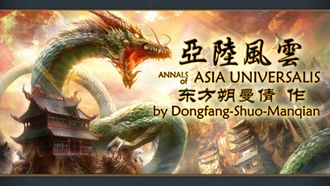

| 亚陆风云 | |
|---|---|
|  | |
| LOGO | |
| 别名/游戏中名称 | Annals of Asia Universalis |
| 类型 | 游戏内容大改 |
| 作者 | 东方朔曼倩 |
| 版本 | [[1]]对应1.28 版本 |
| 论坛/贴吧 | 亚陆风云吧 中文版QQ群：425049362 |
| STEAM创意工坊 | 694484401 |
亚陆风云MOD的宗旨是提升亚洲政权（不止东亚）的可玩性，立志于对亚洲众政权的完善。
MOD简介
在此MOD中汉文化圈政权，亚洲游牧， 满洲，
满洲， 朝鲜，
朝鲜， 日本，
日本， 吐蕃，东南亚，南洋国家，中亚，
吐蕃，东南亚，南洋国家，中亚， 阿拉伯都有了新的设定与修改，独有事件和决议。
阿拉伯都有了新的设定与修改，独有事件和决议。
在其扩展版本中陆续添加了泛亚的其他国家、巴尔干半岛部分国家（ 拜占庭）、大洋洲及
拜占庭）、大洋洲及 俄罗斯的新设定，丰富了游戏内容。
俄罗斯的新设定，丰富了游戏内容。
增加了群雄架空剧本，让历史上几乎所有的汉文化政权、日本大名、朝鲜和越南主要势力全部出现在同一个世界上角逐，并完善了特有的国家理念。
基于11.0
- 亚洲所有国家都有了一套全新的通用任务树系统，分为四列，分别为征服线、行政线、外交线、贸易线。中华地区的国家还有一个在铁人模式下才能完成的“成就”，特定的梗有关，增加趣味。
- 提供了3种新的隐藏货物：马匹（初始价格5.0，军科进步后价格减半）、火药、钢（价格均为4.0）。
- 儒教采用圣公宗的教会力量机制，中国皇帝会有额外的效果。心学的扩散不再由事件传播，而是依靠改革中心传播。
- 重做了中国大陆的宗教、发展度、物产分布，例如甘肃西部和云南部分地区改为
 逊尼派，儒教和道教不再像10.0版本一样简单地“划江而治”，也增加了更多的产煤省份。
逊尼派，儒教和道教不再像10.0版本一样简单地“划江而治”，也增加了更多的产煤省份。 - 各国国家理念的修改，中国诸侯以及日本大名的双效果理念被大规模废除。同时大部分原版存在的国家，如果以前有本mod特有理念，那么也被清除，恢复为原版。
- 欧洲沿海的贸易节点可以组建贸易公司，亚洲的贸易公司区域也有调整。
- 彻底废除澳大利亚、新西兰的土著国家。将安徽南部的大成改为红巾军，信仰明教，而原本的大宁则改为道教，并和大明的理念相同。
- 突厥文化和哈萨克等文化从原有文化组（黎凡特/阿尔泰）中剥离，组建新的文化组。中华内地的文化也由原先的严格按省界划分改为和原版分布相近。
- 天命的获取速度较10.2版本加快。
- 其他平衡性调整。
基于10.2
更新条目：
- 汉化了中国范围内的人名
- 修改了大地图字体为亚陆最初大地图字体
- 修改了收朝贡国的条件和成为朝贡国的条件
- 中国皇帝开满团结理念组之后，可以将朝贡国转为能外交吞并的都护府
- 都护府也和朝贡国一样享受中国皇帝改革好处
- 当都护府被宗主国外交吞并之后，所有朝贡国和都护府增加15独立倾向
- 添加了新附庸关系都护府的相关图标
- 相邻的非朝贡国不再减少天命
- 大幅度调整了增减天命的数值
- 解决了近代化后重复出现修宪决议的问题
- 修复了内战灾难无法停止的BUG
- 日本和俄罗斯不再会因为低精英度而减少天命值
- 修改了成为中国皇帝的条件和夺取天命CB的条件
- 复兴华夏决议不再变国家为华夏，只是一个文化方面的决议
- 新增南明理念，新增大明改为拥有南明理念的决议
- 新增三藩理念，历史剧本专用
- 新增可成立政权哈里发，替代原阿拉伯帝国
- 原阿拉伯帝国改为阿拉伯文化可成立的阿拉伯国
- 新增哈里发理念，作为和罗马理念同强度的理念
- 削弱原来的阿拉伯理念，为阿拉伯文化国家通用理念
- 增加了高丽理念，新罗理念，百济理念
- 满洲文化的三种特有决议要求必须在战争中
- 随机新世界的时候，不再出现贸易制霸美洲的决议
- 贸易制霸世界决议条件不再需要达成贸易制霸美洲决议
- 只有天朝政体的中国皇帝才会有武将文臣宦官派系
- 读档后中国皇帝的武将派系不再为100影响力而是40影响力
- 腾格里教取消虔诚系统
- 实装了煤和石油两种商品，修改了初始价格
- 完善了煤和石油的产生和价格变动系统
- 完善了煤和石油产生和推广的事件
- 修复了日本主导贸易的任务无法完成的问题
- 再次提升了隐藏彩蛋国家的能力
- AI不再会在开了探索理念后疯狂的想开扩张和动员
- 理心之争灾难修改了进度增长方式，现在主要由传教增长
- 东方宗教圣城在被转教后，将失去圣城BUFF
- 任意直辖领土在华夏、远东、鞑靼地区就会出小冰河灾难
- 顾宪成的转教BUFF时间从十年改为一年
- 提升了大明和大明帝国低天命带来的惩罚
- 修改了织田和德川的兵种历史倾向
- 大汉和大蜀开局为盟友关系
- 修改了土默特的历史文件
- 修改了锡金地区的历史归属
- 修复了2112地块兵模站位太偏的问题
- 把大明的国旗改回去了
- 修改了改土归流决议的条件的提示信息
- 所有的精英度改为贤能值，天子改为中国皇帝
- 加入了动态省份的汉化
- 察合台改为亦力把里，满洲改为大金，革法改为南部，乌斯藏改为吐蕃
- 大宋的杭州改为临安
- 修复了中国皇帝迁都事件没有省份汉化的问题
- 修复了马匹没有介绍的问题
- 修复了满洲十全骑兵没翻译的问题
- 去掉了亚陆新增的时代力量的“的”字
- 修正了历史剧本中和珅乱码的问题
- 修改了最终幻想剧本的介绍
- 华夏帝国、罗马帝国、三山帝国的翻译去掉“帝国”二字
- 整合了额外音乐包的所有80首音乐
- 修复了中华，东方帝国，东方共和，大新炮兵兵模不正常的BUG
- 修复了菲律宾兵模不正常的问题
- 替换了过时的载入界面提示语
V10.2已知BUG:
所有国家可收朝贡国；
基于V10.0
新理念组结构
理念组解析
AU一共存在8行政+8外交+9军事一共25个理念组，其中：
行政理念组中霸权理念是隐藏理念组，需要点开一个行政理念组才能点出；
扩张理念组需要是君主或者共和政体才能点出，游牧和部落政体不能点出；
外交理念组中团结理念是隐藏理念组，需要点开一个外交理念组才能点出；
探索理念组需要是君主或者共和政体才能点出，游牧和部落政体不能点出；
军事理念组中贵族理念是隐藏理念组，需要点开一个军事理念组的非共和国才能点出；
财阀理念组是隐藏理念组，需要点开一个军事理念组的共和国政体才能点出；
动员理念组需要是君主或者共和政体才能点出，游牧和部落政体不能点出。
Au理念组存在同类理念二选一锁定，例如：
行政组中宗教和人文二选一，外交组中外交和影响二选一，军事组中数量和质量二选一。
特产兵种：华夏兵种系统大改
天命系统：亚陆15改
亚陆15改
| 改革 | 正面修正 | 负面效果 | 描述 |
|---|---|---|---|
| 改土归流 |
|
守卫国家，需要的不只是城墙和武器，更是人民的拥护，而那些在我们边疆的少数民族，更是我们重要的防线。设立专门的部门，来促进和少数民族的关系，能够让我们的国家更安定和谐。 | |
| 改革税制 |
|
士绅阶级忠诚度-25 | 不少官员在报税时候巧立名目来瞒报，导致征收税款量远远少于应收量，且还在逐年减少。为了保证我们的政府正常运作，我们必须清查土地，并把各种项目的税款合并，让税款能够更顺利的征收。 |
| 军事训练 |
|
士绅阶级忠诚度-25 | 借助更严格的军事纪律和科学的训练方法，让军队不像过去一样散兵游勇，成为更高效的战斗机器。 |
| 整顿吏治 |
|
士绅阶级忠诚度-25 | 宫廷百官把持朝政，通过各种形式的派系斗争和中饱私囊，造成了严重的内耗。如果我们希望权力更有效地下达，税款更有效的用于国家，就应该早日整治我们的中央政府。 |
| 改革科举 |
|
士绅阶级忠诚度-25 | 我们的科举以背诵四书五经为主，这离实际应用其实有差距。为了保证获得我们需要的人才，我们必须改革的科举的科目。 |
| 先进武器 |
|
士绅阶级忠诚度-25 | 工欲善其事，必先利其器。军队拥有先进的武器，才能拥有更强大的战斗力。 |
| 开放贸易 |
|
士绅阶级忠诚度-25 | 人民正在边境走私货物。如果我们把对外贸易合法化，我们能从中抽取利润，从开放贸易中获得利益的民众也会支持我们。 |
| 土地改革 |
|
|
掌握大片土地的地主不仅占据了我们的可用资源，更成为了阻碍改革的力量。为了让我们能更轻松的进步，必须不惜一切代价铲除这些既得利益者。我们要从他们手中夺取他们力量的来源——土地。 |
| 工业链条 |
|
士绅阶级忠诚度-25 | 我们需要更完善的工业链条来保证我们的各种产品供应，从原材料初加工，到零件生产，到成品，皆需齐全，方能保证更先进的产能。 |
| 公共教育 |
|
士绅阶级忠诚度-25 | 工业体系建立的过程，滋生了对于新技术人才的需求。会背诵四书五经的文人不符合我们的需求，我们需要掌握科学技术的人才，我们需要建立新式学堂来培养新式人才。 |
| 军工生产 |
|
士绅阶级忠诚度-25 | 既然我们选择了先进的武器，就不能再依靠落后的手工工场来造武器。大工厂才能保证充足的武器供应。 |
| 工厂私营 |
|
地区维护费+10%，移除国内的士绅阶级 | 民间一些资本家对于工业生产正在跃跃欲试。我们可以考虑把工业生产的负担分给他们一部分，让我们可以集中力量做更重要的方面，也让他们能够以此赚钱。 |
| 大众报纸 |
|
报纸是有效的政治工具。通过面对大众的报纸，可以让政府的意志更广泛的为民众所知。而民间的报纸也可以让我们了解舆论走向，做出更正确的决策。 | |
| 依法治国 |
|
我们的国家需要更进步的法律。由人治变为法治，方能保证行政的高效性。 | |
| 维新变法 |
|
随着国家改革的进程，人民参政的呼声越来越高。是时候下放一些权力，通过立宪让人民能够表现他们的意志。这有助于集中民意民智，也保证了一个先进国家的稳定。 |
旧有的与新的宗教结构
儒教修正
有趣的禁止项
恢复派系机制
如同过去，亚陆制作组恢复了派系机制，派系仍旧是亚陆的一大特色。
天朝派系
多姿多彩的城市
亚陆特制的特殊省份地形。
版本更新历史
只简单列出大版本号的更新。
| 版本号 | 发布时间 | 适用版本 |
|---|---|---|
| V11.0 | 2018年5月1日 | 1.25 |
| V10.2 | 2017年11月4日 | 1.22 |
| V10.0 | 2017年8月20日 | 1.22 |
| V9.5 | 2017年6月22日 | 1.21 |
| V9.0 | 2017年5月1日 | 1.21 |
| V8.5 | 2016年12月14日 | 1.20 |
| V8.0 | 2016年10月22日 | 1.20 |
| V7.5 | 2016年8月12日 | 1.19 |
| V7.0 | 2016年5月15日 | 1.19 |
| V6.5 | 2016年5月1日 | 1.15 |
| V6.0 | 2016年4月9日 | 1.15 |
| V5.0 | 2016年2月5日 | |
| V4.5 | 2015年12月25日 | |
| V4.0 | 2015年9月25日 | |
| V3.7 | 2015年8月19日 | |
| V3.5 | 2015年7月1日 | |
| V3.0 | 2015年6月2日 | |
| V2.0 | 2015年5月22日 | |
| V1.0 | 2015年5月7日 | |
| V0.1 | 2015年5月1日 |
亚陆风云-群雄
亚陆群雄-辽
| 大辽 | 详细信息 |
|---|---|
| 君主 | 名称：耶律阿保机（6 文化： 东北 |
| 政体 | |
| 国教 | |
| 主流文化 | 东北 |
辽-理念
| 理念 | 效果 |
|---|---|
| 传统 | +1 可接受文化； +20% 劫掠速度 |
| 雄心 | +0.5 陆军传统 |
| 1 | -5% 陆军维护费 |
| 2 | +10% 屠城获得君主点数 |
| 3 | +20% 骑兵战斗力 |
| 4 | +20% 改善关系效果； +1 外交威望 |
| 5 | +20% 附庸税； +10% 国外贸易力量 |
| 6 | -10% 骑兵招募花费 |
| 7 | +1 正统度； +1 游牧团结度 |
亚陆群雄-燕
| 大燕 | 详细信息 |
|---|---|
| 君主 | 名称：慕容垂（6 文化： |
| 政体 | |
| 国教 | |
| 主流文化 |
燕-理念
| 理念 | 效果 |
|---|---|
| 传统 | -20% 堡垒维护费； +20% 堡垒守军 |
| 雄心 | -15% 直辖维护费 |
| 1 | +0.5 精英度 |
| 2 | +2 可能顾问 |
| 3 | +10% 围城效率 |
| 4 | +20% 间谍效率 |
| 5 | +1 可接受文化； +10% 行军速度 |
| 6 | -1% 威望衰退； +50% 获得继承人几率 |
| 7 | +20% 海战俘获船只概率； +1 敌军损耗 |
亚陆群雄-赵
| 大赵 | 详细信息 |
|---|---|
| 君主 | 名称：赵雍（6 文化： |
| 政体 | |
| 国教 | |
| 主流文化 |
赵-理念
| 理念 | 效果 |
|---|---|
| 传统 | +10% 补员速度； -10% 骑兵征召花费 |
| 雄心 | +33% 劫掠速度 |
| 1 | -0.15% 造宣称所需的间谍网点数花费； -15%发现间谍行为造成的国家关系影响 |
| 2 | +10% 骑兵比例 +10%骑兵战斗力 |
| 3 | -50% 与宿敌相邻堡垒维护费 |
| 4 | -10% 行政科技花费 |
| 5 | -10% 佣兵花费； +33% 可招募佣兵数量 |
| 6 | +50% 陆战获得威望； +25% 陆战获得陆军传统 |
| 7 | +3 可接受文化数量 |
亚陆群雄-晋
| 大晋 | 详细信息 |
|---|---|
| 君主 | 名称：司马懿（6 文化： |
| 政体 | |
| 国教 | |
| 主流文化 |
晋-理念
| 理念 | 效果 |
|---|---|
| 传统 | -10% 建筑花费； +1% 年度职业度 |
| 雄心 | +2 可接受文化数量 |
| 1 | -20% 接受思潮花费； +1可用顾问 |
| 2 | -10% 外交吞并花费 |
| 3 | -20% 稳定花费； -10% 使用残酷镇压的军事点数花费 |
| 4 | +1 月度辉煌点数 |
| 5 | +2 将领围城属性； +20% 支持叛军效率 |
| 6 | +2 不需付出额外军事点数来维持的将领数量 |
| 7 | -10 分离主义 |
亚陆群雄-韩
| 大韩 | 详细信息 |
|---|---|
| 君主 | 名称：（6 文化： |
| 政体 | |
| 国教 | |
| 主流文化 |
韩-理念
| 理念 | 效果 |
|---|---|
| 传统 | +10% 全国防御效率； +10% 税收收入修正 |
| 雄心 | -15% 雇佣兵维护费 |
| 1 | +10% 间谍工作效率 |
| 2 | -0.05 全省份自治度月度变化 |
| 3 | +10% 生产效率 |
| 4 | -10% 提升稳定的行政点数花费； +5 最大专制度上限 |
| 5 | +5% 火力伤害； +5% 雇佣兵训练度 |
| 6 | +1 月度敌军损耗 |
| 7 | +50% 可借出的佣兵； +1 可以征召的顾问 |
亚陆群雄-魏
| 大魏 | 详细信息 |
|---|---|
| 君主 | 名称：曹操（6 文化： |
| 政体 | |
| 国教 | |
| 主流文化 |
魏-理念
| 理念 | 效果 |
|---|---|
| 传统 | +10% 步兵战斗力； -100% 核心化花费 |
| 雄心 | +1.00 每年的专制主义倾向 |
| 1 | -5% 陆军维护费修正 |
| 2 | -10% 顾问花费；-5% 理念花费 |
| 3 | -15% 过度扩张造成的外交关系影响； -20% 不合理要求 |
| 4 | -2% 年度陆军传统衰减 |
| 5 | +50% 添丁进口的机会 |
| 6 | +1 威望上升 |
| 7 | +1 年度精英度； +0.1 文官派系影响 |
亚陆群雄-齐
亚陆群雄-鲁
亚陆群雄-秦
| 大魏 | 详细信息 |
|---|---|
| 君主 | 名称：嬴政（7 文化： |
| 政体 | |
| 国教 | |
| 主流文化 |
亚陆群雄-顺
亚陆群雄-夏
亚陆群雄-凉
亚陆群雄-殷（商）
亚陆群雄-汉
亚陆群雄-蜀
亚陆群雄-西
亚陆群雄-宁
亚陆群雄-梁
亚陆群雄-闽
亚陆群雄-吴
亚陆群雄-宋
亚陆群雄-新
亚陆群雄-隋
亚陆群雄-唐
亚陆群雄-郑
亚陆群雄-陈
亚陆群雄-周
亚陆群雄-楚
亚陆群雄-兴
亚陆群雄-太平
亚陆群雄-苍梧（广西土司）
亚陆群雄-大理（云贵土司）
亚陆群雄-夜郎（川南土司）
亚陆群雄-南诏（云贵土司）
亚陆风云（教主国）
| 亚陆风云 | 详细信息 |
|---|---|
| 君主 | 名称：喵喵喵（9 文化： |
| 政体 | |
| 国教 | 心教 |
| 主流文化 | 华夏 |
教主国-理念
| 理念 | 效果 |
|---|---|
| 传统 | +100% 传教力量； -10 年度腐败度 |
| 雄心 | -90% 所有需花费的君主力量点数 |
| 1 | +10 年度威望 |
| 2 | +100% 陆军士气； +100% 海军士气 |
| 3 | +100 外交威望 |
| 4 | +100% 训练度 |
| 5 | +1000% 陆军上限； +1000% 海军上限 |
| 6 | -100% 陆军维护费修正 ； -100% 海军维护费修正 |
| 7 | +100% 围城能力 |